| 伝えるための心理統計 |
| 伝えるための心理統計 |

同じ研究がもう一度行われたときに、今回の研究から得られたのと同じ符号の効果量が得られる確率1。
要は、今回得られた効果量を 、将来得られる効果量を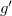とすると、
、将来得られる効果量を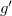とすると、
| 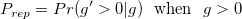 | (9.65) |
効果量の符号に関する予測確率であり、仮説検定の枠組みとは基本的に関係がない2。
片側検定における 値を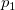と表して、
値を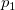と表して、
| 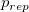 | 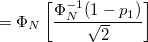 | (9.66) | ||
 |
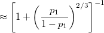 | (9.67) |
つまり、はの関数である3。
片側検定の値を用いている
母分散を既知とみなしている4
Psychological Methods にの特集あり（2010年）。
値ととの関係
> ### p_repとp値の関係（Killeen, 2005a）
> # 正確な値
> p.rep <- function(p1){
+ prep <- pnorm(q=(qnorm(p=1-p1)/sqrt(2)))
+ return(prep)
+ }
> p.rep(p1=c(0.5,0.1,0.05,0.01))
[1] 0.5000000 0.8175834 0.8776029 0.9500127
> # 近似値
> p.rep.approx <- function(p1){
+ prep.approx <- 1/(1+(p1/(1-p1))^(2/3))
+ return(prep.approx)
+ }
> p.rep.approx(p1=c(0.5,0.1,0.05,0.01))
[1] 0.5000000 0.8122682 0.8768529 0.9553581
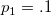とあまり小さくなくとも、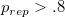と大きな値になる。
| 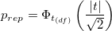 | (9.68) |
片側検定、両側検定の区別なく使える
母分散を未知としている
→ 1要因分散分析への拡張も
の算出Rに付属のデータPlantGrowthの統制群と実験群1のデータを用いて、Lecoutre et al. (2010) によるを計算してみる。
> ### p_rep（Lecoutre et al., 2010）
> data(PlantGrowth) # 植物の成長データ
> data01 <- subset(PlantGrowth, group!="trt2") # 2群だけ取り出す
> data01$group <- droplevels(data01$group) # 水準trt2を削除
> (fit.ttest <- t.test(weight~group, var.equal=T, data=data01)) # t検定
Two Sample t-test
data: weight by group
t = 1.1913, df = 18, p-value = 0.249
alternative hypothesis: true difference in means is not equal to 0
95 percent confidence interval:
-0.2833003 1.0253003
sample estimates:
mean in group ctrl mean in group trt1
5.032 4.661
> t.value <- as.numeric(fit.ttest$statistic) # t値
> df <- fit.ttest$parameter # 自由度
> library(effsize)
> cohen.d(weight~group, data=data01) # Hedgesのg
Cohen's d
d estimate: 0.5327478 (medium)
95 percent confidence interval:
inf sup
-0.4769679 1.5424635
> (prep <- pt(q=abs(t.value)/sqrt(2),df=df)) # p_rep
[1] 0.7946769
この例の場合、検定結果自体は有意ではないが（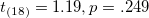）、効果量の符号の再現性については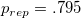と高いと評価できそうである。
Footnotes
値を予測確率と誤って考えていることを示した研究もある（Oakes, 1986）。標本理論における予測確率については、Miller (2009)を参照。 検定の結果やとあわせて報告するのは矛盾している。
検定の結果やとあわせて報告するのは矛盾している。| 伝えるための心理統計 |